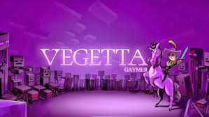

VEGETTA 777
Samuel de Luque Batuecas (Madrid, 12 de abril de 1989), más conocido como Vegetta777, es un
youtuber y streamer español que sube videos y hace emisiones en directo de gameplays. Su canal de YouTube cuenta con más de 34 millones de suscriptores (lo que lo convierte en el
tercer canal más grande de España) y 15 000 000 000 (quince mil millones) de vistas.